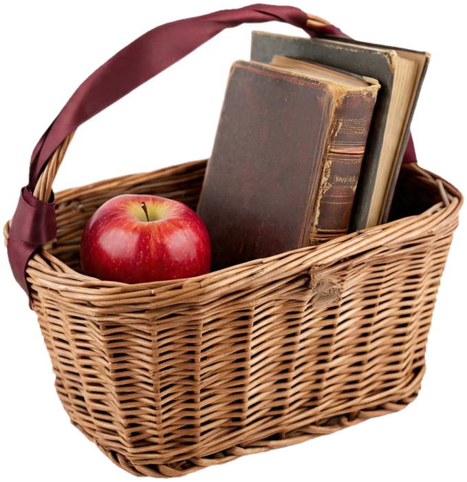

система вместо хаоса
МЕНЬШЕ УЧЕБНИКОВ,
БОЛЬШЕ СИСТЕМЫ

Один трекер прогресса вместо стопки тетрадей и забытых тем.
ЕГЭ Тренажёр · бесплатно
вариант 5 · книги · вертикаль 2:3 · 1000 × 1500

Один трекер прогресса вместо стопки тетрадей и забытых тем.